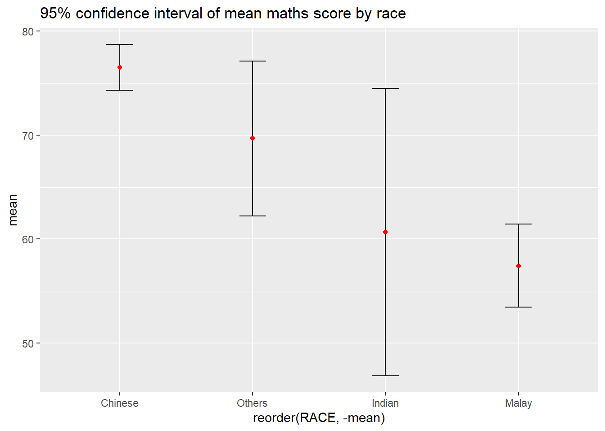
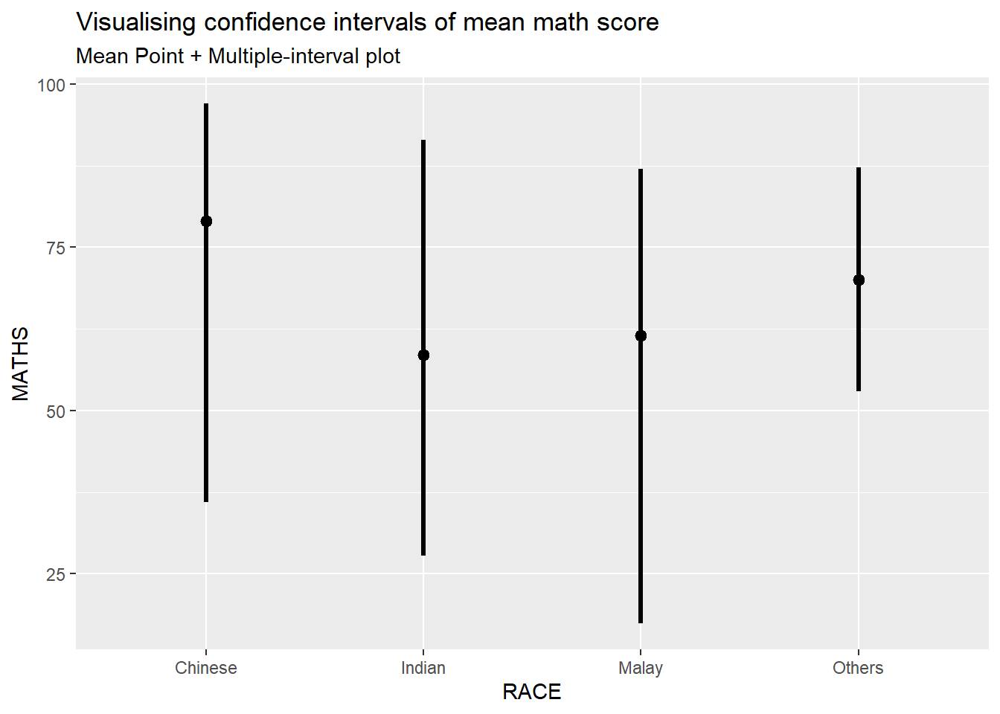
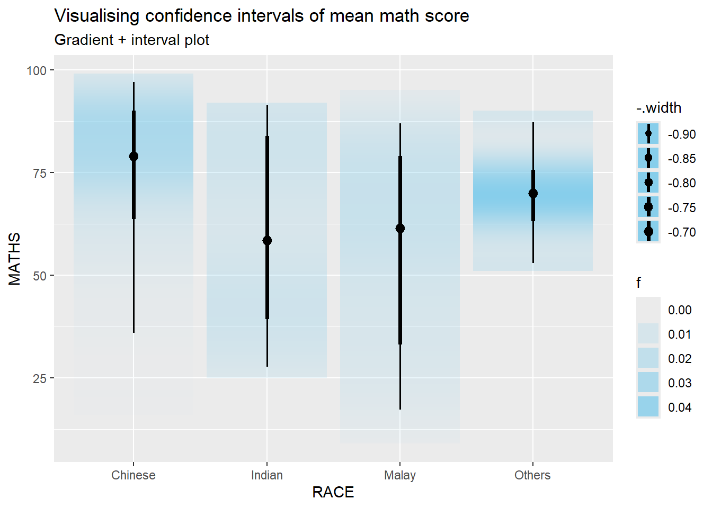
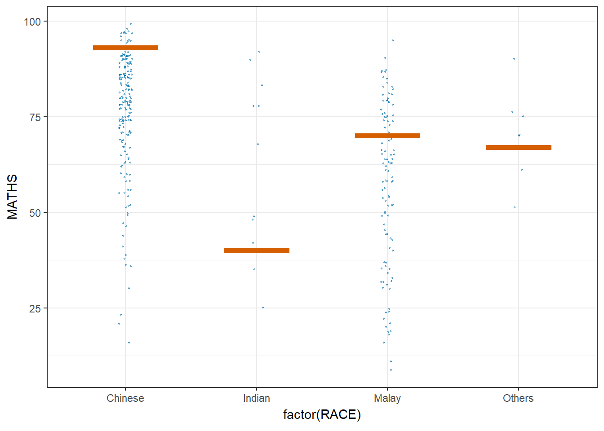
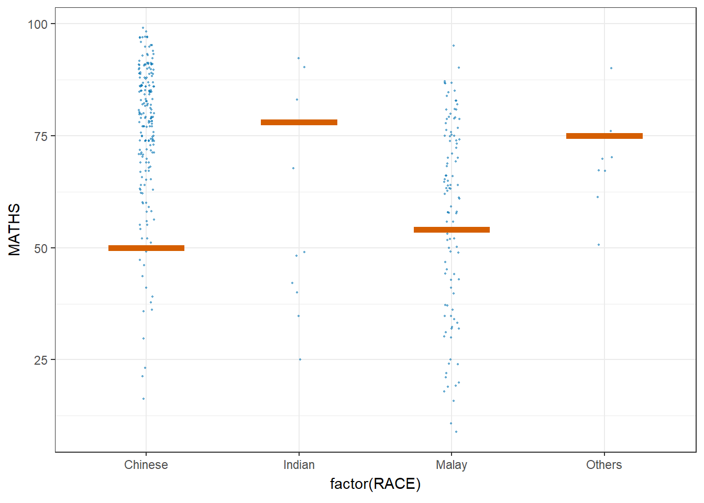

devtools::install_github("wilkelab/ungeviz")Hands-on Exercise 4b: Visualising Uncertainty
Learning Outcome
Visualising uncertainty is relatively new in statistical graphics. In this chapter, you will gain hands-on experience on creating statistical graphics for visualising uncertainty. By the end of this chapter you will be able:
to plot statistics error bars by using ggplot2,
to plot interactive error bars by combining ggplot2, plotly and DT,
to create advanced by using ggdist, and
to create hypothetical outcome plots (HOPs) by using ungeviz package.
Getting Started
Installing and loading the packages
For the purpose of this exercise, the following R packages will be used, they are:
tidyverse, a family of R packages for data science process,
plotly for creating interactive plot,
gganimate for creating animation plot,
DT for displaying interactive html table,
crosstalk for for implementing cross-widget interactions (currently, linked brushing and filtering), and
ggdist for visualising distribution and uncertainty.
pacman::p_load(ungeviz, plotly, crosstalk,
DT, ggdist, ggridges,
colorspace, gganimate, tidyverse)Data import
For the purpose of this exercise, Exam_data.csv will be used.
exam <- read_csv("data/Exam_data.csv")Visualizing the uncertainty of point estimates
A point estimate is a single number, such as a mean. Uncertainty is expressed as standard error, confidence interval, or credible interval
Important
- Don’t confuse the uncertainty of a point estimate with the variation in the sample
In this section, you will learn how to plot error bars of maths scores by race by using data provided in exam tibble data frame.
Firstly, code chunk below will be used to derive the necessary summary statistics. my_sum.
my_sum <- exam %>%
group_by(RACE) %>%
summarise(
n=n(),
mean=mean(MATHS),
sd=sd(MATHS)
) %>%
mutate(se=sd/sqrt(n-1))
Things to learn from the code chunk above
- group_by() of dplyr package is used to group the observation by RACE,
- summarise() is used to compute the count of observations, mean, standard deviation
- mutate() is used to derive standard error of Maths by RACE, and
- the output is save as a tibble data table called my_sum.
Note
For the mathematical explanation, please refer to Slide 20 of Lesson 4.
Next, the code chunk below will be used to display my_sum tibble data frame in an html table format.
knitr::kable(head(my_sum), format = 'html')| RACE | n | mean | sd | se |
|---|---|---|---|---|
| Chinese | 193 | 76.50777 | 15.69040 | 1.132357 |
| Indian | 12 | 60.66667 | 23.35237 | 7.041005 |
| Malay | 108 | 57.44444 | 21.13478 | 2.043177 |
| Others | 9 | 69.66667 | 10.72381 | 3.791438 |
Plotting standard error bars of point estimates
Now we are ready to plot the standard error bars of mean maths score by race as shown below.
ggplot(my_sum) +
geom_errorbar(
aes(x=RACE,
ymin=mean-se,
ymax=mean+se),
width=0.2,
colour="black",
alpha=0.9,
size=0.5) +
geom_point(aes
(x=RACE,
y=mean),
stat="identity",
color="red",
size = 1.5,
alpha=1) +
ggtitle("Standard error of mean
maths score by rac")
Things to learn from the code chunk above
- The error bars are computed by using the formula mean +/-se.
- For geom_point(), it is important to indicate stat=“identity”.
Plotting confidence interval of point estimates
Instead of plotting the standard error bar of point estimates, we can also plot the confidence intervals of mean maths score by race..

Things to learn from the code chunk above
- The confidence intervals are computed by using the formula mean+/-1.96*se.
- The error bars is sorted by using the average maths scores.
- labs() argument of ggplot2 is used to change the x-axis label.
Visualizing the uncertainty of point estimates with interactive error bars
In this section, you will learn how to plot interactive error bars for the 99% confidence interval of mean maths score by race as shown in the figure below.
Visualising Uncertainty: ggdist package
- ggdist is an R package that provides a flexible set of ggplot2 geoms and stats designed especially for visualising distributions and uncertainty.
- It is designed for both frequentist and Bayesian uncertainty visualization, taking the view that uncertainty visualization can be unified through the perspective of distribution visualization:
- for frequentist models, one visualises confidence distributions or bootstrap distributions (see vignette(“freq-uncertainty-vis”));
- for Bayesian models, one visualises probability distributions (see the tidybayes package, which builds on top of ggdist).

Visualizing the uncertainty of point estimates: ggdist methods
In the code chunk below, stat_pointinterval() of ggdist is used to build a visual for displaying distribution of maths scores by race.
exam %>%
ggplot(aes(x = RACE,
y = MATHS)) +
stat_pointinterval() + #<<
labs(
title = "Visualising confidence intervals of mean math score",
subtitle = "Mean Point + Multiple-interval plot")
Note
This function comes with many arguments, students are advised to read the syntax reference for more detail.
For example, in the code chunk below the following arguments are used:
- width = 0.95
- point = median
- interval = qi
exam %>%
ggplot(aes(x = RACE, y = MATHS)) +
stat_pointinterval(.width = 0.95,
.point = median,
.interval = qi) +
labs(
title = "Visualising confidence intervals of mean math score",
subtitle = "Mean Point + Multiple-interval plot")
Visualizing the uncertainty of point estimates: ggdist methods
Your turn
Makeover the plot on previous slide by showing 95% and 99% confidence intervals.
exam %>%
ggplot(aes(x = RACE,
y = MATHS)) +
stat_pointinterval(
show.legend = FALSE) +
labs(
title = "Visualising confidence intervals of mean math score",
subtitle = "Mean Point + Multiple-interval plot")
Gentle advice: This function comes with many arguments, students are advised to read the syntax reference for more detail.
Visualizing the uncertainty of point estimates: ggdist methods
In the code chunk below, stat_gradientinterval() of ggdist is used to build a visual for displaying distribution of maths scores by race.
exam %>%
ggplot(aes(x = RACE,
y = MATHS)) +
stat_gradientinterval(
fill = "skyblue",
show.legend = TRUE
) +
labs(
title = "Visualising confidence intervals of mean math score",
subtitle = "Gradient + interval plot")
Gentle advice: This function comes with many arguments, students are advised to read the syntax reference for more detail.
Visualising Uncertainty with Hypothetical Outcome Plots (HOPs)
Step 1: Installing ungeviz package
devtools::install_github("wilkelab/ungeviz")Note: You only need to perform this step once.
Step 2: Launch the application in R
library(ungeviz)ggplot(data = exam,
(aes(x = factor(RACE), y = MATHS))) +
geom_point(position = position_jitter(
height = 0.3, width = 0.05),
size = 0.4, color = "#0072B2", alpha = 1/2) +
geom_hpline(data = sampler(25, group = RACE), height = 0.6, color = "#D55E00") +
theme_bw() +
# `.draw` is a generated column indicating the sample draw
transition_states(.draw, 1, 3)
Visualising Uncertainty with Hypothetical Outcome Plots (HOPs)
ggplot(data = exam,
(aes(x = factor(RACE),
y = MATHS))) +
geom_point(position = position_jitter(
height = 0.3,
width = 0.05),
size = 0.4,
color = "#0072B2",
alpha = 1/2) +
geom_hpline(data = sampler(25,
group = RACE),
height = 0.6,
color = "#D55E00") +
theme_bw() +
transition_states(.draw, 1, 3)